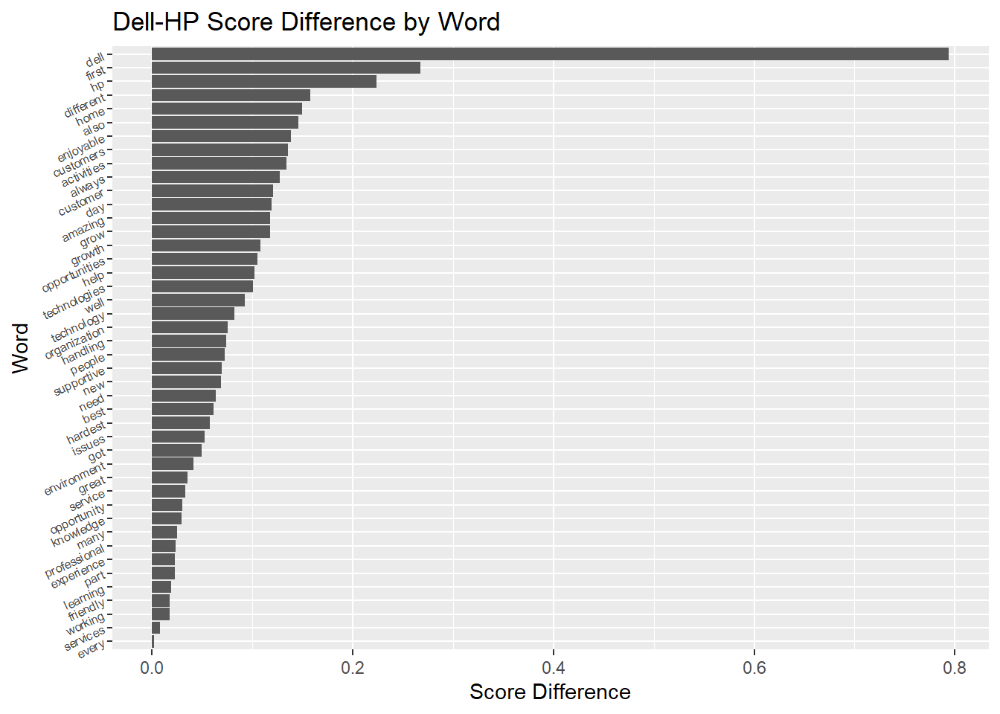

pacman::p_load(tidyverse, jsonlite, here, stringr, superml)Data Exercise
This exercise will load, process, and explore a text dataset that consists of employee reviews of their current and former employers on LinkedIn. The dataset can be found from Kaggle here.
Starting with loading our packages, tidyverse for general cleaning, jsonlite to bring in our Json file, and here to make directory referencing easier.
Now we will load our data. Json files are not generally square or in a data frame format, but the fromJSON function makes this tremendously easy.
emp_rev <- fromJSON(here('data-exercise', 'employer-reviews.json'))
head(emp_rev) ReviewTitle
1 Productive
2 Stressful
3 Good Company for Every employee
4 Productive
5 Non productive
6 Good
CompleteReview
1 Good company, cool workplace, work load little bit higher. Clean environment, disciplined, good cantin, big campus, systematic workflow, lenient but reliable firm.
2 1. Need to work on boss's whims and fancies 2. Priorities keep changing 3. No regards for work life balance 4. Completing the work before time is stressed too much than completing it well. Involves lots of reworking, blame games; etc. 5. No job boundaries, you will be asked to do any work depending on the requirements.
3 Good company for every Engineers dream, Full Mediclaim for entired family, Free transport services from company location to home, Township culture for employees,job security.
4 I am just pass out bsc in chemistry Typical day at work Mangement Work place good The most enjoyable part of the job I learn more information in company
5 Not so fun at work just blame games Target people and less target at work Paid less No increment Make you feel low Too much stress No one understands you
6 I working as laboratory technician form last one year in covid19 staff but we are not appreciate of any about awards we also here for work work and work ..
URL Rating
1 https://in.indeed.com/cmp/Reliance-Industries-Ltd/reviews 3.0
2 https://in.indeed.com/cmp/Reliance-Industries-Ltd/reviews 3.0
3 https://in.indeed.com/cmp/Reliance-Industries-Ltd/reviews 5.0
4 https://in.indeed.com/cmp/Reliance-Industries-Ltd/reviews 5.0
5 https://in.indeed.com/cmp/Reliance-Industries-Ltd/reviews 1.0
6 https://in.indeed.com/cmp/Reliance-Industries-Ltd/reviews 3.0
ReviewDetails
1 (Current Employee) - Ghansoli - August 30, 2021
2 (Former Employee) - - August 26, 2021
3 (Former Employee) - - August 17, 2021
4 (Current Employee) - - August 17, 2021
5 (Former Employee) - - August 9, 2021
6 (Current Employee) - Dahej, Gujarat - July 22, 2021str(emp_rev)'data.frame': 145209 obs. of 5 variables:
$ ReviewTitle : chr "Productive" "Stressful" "Good Company for Every employee" "Productive" ...
$ CompleteReview: chr "Good company, cool workplace, work load little bit higher. Clean environment, disciplined, good cantin, big cam"| __truncated__ "1. Need to work on boss's whims and fancies 2. Priorities keep changing 3. No regards for work life balance 4. "| __truncated__ "Good company for every Engineers dream, Full Mediclaim for entired family, Free transport services from company"| __truncated__ "I am just pass out bsc in chemistry Typical day at work Mangement Work place good The most enjoyable part of th"| __truncated__ ...
$ URL : chr "https://in.indeed.com/cmp/Reliance-Industries-Ltd/reviews" "https://in.indeed.com/cmp/Reliance-Industries-Ltd/reviews" "https://in.indeed.com/cmp/Reliance-Industries-Ltd/reviews" "https://in.indeed.com/cmp/Reliance-Industries-Ltd/reviews" ...
$ Rating : chr "3.0" "3.0" "5.0" "5.0" ...
$ ReviewDetails : chr "(Current Employee) - Ghansoli - August 30, 2021" "(Former Employee) - - August 26, 2021" "(Former Employee) - - August 17, 2021" "(Current Employee) - - August 17, 2021" ...summary(emp_rev) ReviewTitle CompleteReview URL Rating
Length:145209 Length:145209 Length:145209 Length:145209
Class :character Class :character Class :character Class :character
Mode :character Mode :character Mode :character Mode :character
ReviewDetails
Length:145209
Class :character
Mode :character Looking at the columns, we will want to do some cleanup on some of the more categorical ones. Starting with the URL, this may contain information about the employer, which we can extract. First i want to confirm that all the urls start the same way.
substr(emp_rev$URL, 1, 26) %>% unique() #substring extracts first 26 characters,[1] "https://in.indeed.com/cmp/"#unique tells us all of the unique values in the substring'd column
length(unique(emp_rev$URL)) #tells us the number of potential company names[1] 7286Next, I will use some substrings and regex to extract the company name after the above url portion.
d1 <- emp_rev %>% mutate(
CompNm = (substr(URL, 27, nchar(URL)) %>% str_extract('.*(?=/)') %>% str_replace_all('-',' '))
)
#substring removes the first part of the url, since its always the same at 27 characters
#str_extract looks for and extracts the first set of characters before the "/"
#str_replace_all removes all of the dashes and replaces them with spaces
d1$CompNm %>% unique() [1] "Reliance Industries Ltd" "Mphasis"
[3] "Kpmg" "Yes Bank"
[5] "Sutherland" "Marriott International, Inc."
[7] "DHL" "Jio"
[9] "Vodafoneziggo" "HP"
[11] "Maersk" "Ride.swiggy"
[13] "Jll" "Alstom"
[15] "UnitedHealth Group" "Tata Consultancy Services (tcs)"
[17] "Capgemini" "Teleperformance"
[19] "Cognizant Technology Solutions" "Mahindra & Mahindra Ltd"
[21] "L&T Technology Services Ltd." "Bharti Airtel Limited"
[23] "Indeed" "Hyatt"
[25] "Icici Prudential Life Insurance" "Accenture"
[27] "Honeywell" "Standard Chartered Bank"
[29] "Nokia" "Apollo Hospitals"
[31] "Tata Aia Life" "Hdfc Bank"
[33] "Bosch" "Deloitte"
[35] "Ey" "Microsoft"
[37] "Barclays" "JPMorgan Chase"
[39] "Muthoot Finance" "Wns Global Services"
[41] "Kotak Mahindra Bank" "Infosys"
[43] "Oracle" "Byju's"
[45] "Deutsche Bank" "Hinduja Global Solutions"
[47] "Ericsson" "Axis Bank"
[49] "IBM" "Concentrix"
[51] "Wells Fargo" "Google"
[53] "Dell Technologies" "Facebook"
[55] "Amazon.com" "Flipkart.com"
[57] "American Express" "Citi"
[59] "HSBC" This is cheating a little bit, because I counted the number of characters in the first part of the URL manually, meaning this is not the most robust way to identify the company name, but observing our values it does not look like it caused any problems.
Next let’s look at the Rating. When the file was read in it looks like it was read as a string, but it would be more useful to us as a number. We’ll start with a quick summary and completeness check.
d1$Rating %>% summary() #summary of variable, understand scope Length Class Mode
145209 character character sum(d1$Rating=='') + sum(is.na(d1$Rating)) #counts empty and missing values[1] 0d1$Rating %>% unique()[1] "3.0" "5.0" "1.0" "4.0" "2.0"So the variable is a string, but does not contain any missing or null values. All of the values fall under the five-point scale, so it should be safe to convert to a number.
d2 <- d1 %>% mutate(
Rating = as.numeric(Rating)
) # converts the Rating variable to numeric and saves it to the same variable.One last variable to look at, ReviewDetails. This looks to have three parts to it. The status of the employee, the location, and the date the review was done. I’m most interested in the status for this exercise, but let’s see if we can get all three
#str_split() breaks up the column by the dashes
#simplify = TRUE turns it into a matrix
# dim() gives us the number of rows and columns of the matrix, expecting 3 cols
str_split(emp_rev$ReviewDetails, '-', simplify = TRUE) %>% dim()[1] 145209 5The intention was to split the variable by dashes to create three columns, however it looks like there are some values that contain a dash themselves. This causes two additional columns to appear, so we will have to make some adjustments.
#check for number of columns
str_split(emp_rev$ReviewDetails, ' - ', simplify = TRUE) %>% dim() [1] 145209 3#check for number of unique employee statuses
str_split(emp_rev$ReviewDetails, ' - ', simplify = TRUE)[,1] %>% unique() %>% head(10) [1] "(Current Employee) "
[2] "(Former Employee) "
[3] "Training (Former Employee) "
[4] "Officer (Former Employee) "
[5] "Leader (Current Employee) "
[6] "health care (Current Employee) "
[7] "Good team worker (Former Employee) "
[8] "Officer (Current Employee) "
[9] "Sr.G.M.Engineering and projects . (Former Employee) "
[10] "Hospitality (Former Employee) " #check for number of empty values
ifelse(str_split(emp_rev$ReviewDetails, ' - ', simplify = TRUE)[,3] =='',1,0) %>% sum()[1] 0Fortunately, the solution is easier than it first appeared. Originally I was going to approach the split by splitting from the left and the right for Employee Status and Review Date, then removing everything thats in the left and right for location. However, the dashes that split the different details would have two additional spaces after each, so if we include that in the split function we can get the result we are looking for.
The Employee Status section fo the Details field looks to have more than just the status for some observations. A quick check might be worth it to see if Employee Title would be worth pursuing.
# splits the columns then checks the first column for the employee status values,
#then counts those that don't fall into the status value only
emp_rev %>%
mutate(
Stat = str_split(ReviewDetails, ' - ', simplify = TRUE)[,1],
Stat = ifelse(Stat %in% c('(Current Employee) ', '(Former Employee) '), 0, 1)
) %>% select(Stat) %>% sum()[1] 523With only 523 observations that fall outside of the Current or Former employee status, it’s relatively safe to ignore that part of the ReviewDetails field.
#saves the split column into three new variables.
#Review Date is tranformed into date format
#Employee status uses str_extract to get the status vales only
#Location uses trimws() to remove extrenuous blanks
d3 <- d2 %>% mutate(
ReviewDate = (str_split(ReviewDetails, ' - ', simplify = TRUE)[,3] %>%
parse_date_time('0m d, y')),
EmployeeStatus = (str_split(ReviewDetails, ' - ', simplify = TRUE)[,1] %>%
str_extract('(Current Employee)|(Former Employee)')),
Location = (str_split(ReviewDetails, ' - ', simplify = TRUE)[,2] %>%
trimws())
)
# checks for how many values actually have a location.
#Primarily to check if the column is worth using
d3$Location %>% unique() %>% length()[1] 3780#Checks to make sure only two values are in the status
d3$EmployeeStatus %>% unique() %>% length()[1] 2#Null and empty checks for new columns.
#DatNull does not check for empties because of date format limitation
d3 %>% summarize(
StatNull = sum(EmployeeStatus == '') + sum(is.na(EmployeeStatus)),
DatNull = sum(is.na(ReviewDate)),
LocNull = sum(Location=='') + sum(is.na(Location))
) StatNull DatNull LocNull
1 0 0 129942Location is a pretty empty field, so it can largely be ignored, otherwise our other two variables look great. From here we can move on to the Review text itself.
#lower cases the full review text
d3 <- d3 %>% mutate(
CompleteReview = tolower(CompleteReview)
)Before we do anything we do anything with the reviews, the dataset is huge, and since the next step involves creating a bag of words it would probably be a good idea to filter the dataset. We will pick two companies to filter to as our companies of interest. First let’s look at the number of reviews by company.
#checks the count of reviews by company name
d3 %>% group_by(CompNm) %>%
summarize(
cnt = n()
) %>% arrange(-cnt)# A tibble: 59 × 2
CompNm cnt
<chr> <int>
1 Tata Consultancy Services (tcs) 14441
2 IBM 10820
3 Infosys 10696
4 Accenture 10137
5 Cognizant Technology Solutions 9626
6 Hdfc Bank 6749
7 Capgemini 5248
8 Amazon.com 3385
9 L&T Technology Services Ltd. 3226
10 Concentrix 3162
# ℹ 49 more rowsLooking at the size, HP and Dell Technologies look pretty reasonable, so we can filter to those two and compare.
#filters to reviews for HP and Dell Technologies, saves to new df
d4 <- d3 %>% filter(CompNm %in% c('Dell Technologies', 'HP'))The next step will create a ‘bag of words’ commonly used for machine learning, but we’re going to use it this time for to get summary information about scores based on the appearance of words.
#initializes the class for CountVectorizer.
#Only looking at top 100 most frequently used words
cfv <- CountVectorizer$new(max_features = 100)
#Transforms the occurence of each word across all reviews into a vector
cf_mat <- cfv$fit_transform(d4$CompleteReview)
#transposed for readability
head(cf_mat) %>% t() [,1] [,2] [,3] [,4] [,5] [,6]
work 1 1 1 1 1 0
good 1 0 0 4 1 0
management 0 0 0 1 0 0
company 2 0 1 2 0 0
place 0 1 0 0 0 2
team 0 0 0 0 0 0
great 0 1 0 0 0 0
hp 0 1 2 0 1 0
working 0 0 0 0 0 1
dell 0 0 0 0 0 0
job 0 0 1 0 0 0
culture 0 0 0 0 0 0
life 0 0 0 0 0 0
environment 0 0 0 0 1 0
lot 0 0 0 0 1 0
part 0 0 0 0 0 0
learn 0 0 0 0 0 2
balance 0 0 0 0 0 0
new 0 0 0 0 0 0
fun 0 0 0 0 1 0
day 0 0 0 0 0 2
experience 0 0 0 0 1 1
best 0 0 0 0 0 1
time 0 0 0 0 0 0
learned 0 0 0 0 0 0
co 0 0 0 0 0 0
friendly 1 0 0 2 0 0
learning 0 0 0 0 2 0
employees 0 0 0 1 0 0
people 0 0 0 0 0 0
employee 0 0 0 1 0 0
process 0 0 0 0 0 0
things 0 0 0 0 0 0
can 0 0 0 2 0 0
workers 0 0 0 0 0 0
nice 0 0 0 1 0 0
s 0 1 0 0 0 0
customer 1 0 0 0 0 1
will 0 0 0 1 0 0
support 0 0 0 0 0 1
also 0 0 0 0 0 0
one 0 0 0 0 0 0
career 0 1 0 0 0 0
like 0 0 0 1 0 0
get 0 0 2 0 0 0
many 0 0 0 0 0 0
growth 0 0 1 0 0 1
worked 0 0 0 0 1 0
well 0 0 0 0 0 0
skills 0 0 1 0 0 0
learnt 0 0 0 0 0 0
salary 1 0 0 0 0 0
every 0 0 0 0 1 0
enjoyable 0 0 0 0 0 0
training 0 0 0 0 0 0
knowledge 0 0 1 0 0 1
technical 0 0 1 0 0 0
always 0 0 0 0 0 0
customers 0 0 0 0 0 0
opportunities 0 0 0 0 0 0
hardest 0 0 0 0 0 0
supportive 0 0 0 0 0 0
excellent 0 0 0 0 0 0
business 0 0 0 0 0 0
opportunity 0 0 1 0 0 0
really 0 1 0 1 0 0
years 0 0 0 0 0 0
different 0 0 0 0 0 0
grow 0 0 0 0 0 0
managers 0 0 0 0 0 1
issues 0 0 0 0 0 0
activities 0 0 0 0 1 0
much 0 0 0 0 0 0
got 1 0 0 0 0 0
project 0 0 0 1 0 0
help 0 0 0 0 0 0
first 0 0 0 0 0 0
manager 0 0 0 0 0 0
client 0 0 0 0 0 0
pressure 0 0 0 0 0 0
professional 0 0 0 0 0 0
flexible 0 0 0 0 0 0
us 0 0 0 0 0 0
technologies 0 0 0 0 0 0
helpful 0 0 0 0 0 0
organization 0 0 0 0 0 0
enjoyed 0 0 0 0 0 0
handling 0 0 0 0 0 0
workplace 0 0 0 0 0 0
benefits 1 0 0 0 0 0
technology 0 0 0 0 0 0
sales 0 0 0 0 0 0
overall 0 0 0 0 1 0
projects 0 0 0 0 0 0
service 0 0 0 0 0 0
typical 0 0 0 0 0 0
amazing 0 0 0 0 0 0
need 0 0 0 0 0 0
home 0 0 0 0 0 0
services 0 0 0 0 0 0Now we combine the bag of words matrix to the dataframe to make summarizing a bit easier
#combines bag of words with orginal data frame
d5 <- cbind(d4, cf_mat)We can take a look at the average score for each word for both companies. Note that the average score is weighted by the number of appearances of a word, that is to say that if a word appears multiple times in a review the score will have a greater weight.
#Multiples the rating by the appearance of each word, then sums that up for each word
#Then it divides by the total number of appearances of that word
((d5$Rating * d5[,10:109]) %>% colSums())/(colSums(d5[,10:109])) work good management company place
4.239728 4.152515 4.140500 4.208420 4.260095
team great hp working dell
4.221481 4.352092 4.276878 4.249440 4.292874
job culture life environment lot
4.180314 4.321168 4.286114 4.289959 4.220779
part learn balance new fun
4.174620 4.230942 4.242068 4.264916 4.288538
day experience best time learned
4.173973 4.273743 4.497076 4.168182 4.176380
co friendly learning employees people
4.150769 4.305772 4.239370 4.270799 4.191736
employee process things can workers
4.270408 4.169811 4.235741 4.199620 4.158397
nice s customer will support
4.212644 4.127413 4.300797 4.062000 4.235772
also one career like get
4.271967 4.256356 4.267094 4.221729 4.159251
many growth worked well skills
4.176755 4.106436 4.270471 4.308458 4.300752
learnt salary every enjoyable training
4.251256 3.877863 4.318421 4.171123 4.329640
knowledge technical always customers opportunities
4.189944 4.247887 4.219373 4.272206 4.262537
hardest supportive excellent business opportunity
4.088496 4.281899 4.489552 4.247678 4.263492
really years different grow managers
4.290657 4.163763 4.184397 4.370107 4.306859
issues activities much got project
4.408397 4.310345 3.923077 4.315175 4.003922
help first manager client pressure
4.360324 4.258621 4.210526 4.136564 4.053097
professional flexible us technologies helpful
4.355556 4.247748 4.325792 4.239819 4.303167
organization enjoyed handling workplace benefits
4.319444 4.280374 4.202830 4.241706 4.142180
technology sales overall projects service
4.204762 4.328502 4.082927 4.113300 4.336634
typical amazing need home services
4.080808 4.520202 3.953846 4.226804 4.300518 Now lets split up the data by company and see if there are any differences.
#Standard filters saved as new data frames
Dell <- d5 %>% filter(CompNm == 'Dell Technologies')
HP <- d5 %>% filter(CompNm == 'HP')We can use the same logic as before to get the average score by word, but for each of our new dataframes for each company.
#Finds the average score by word for Dell. Saves as dataframe
Dell_scores <- ((Dell$Rating * Dell[,10:109]) %>%
colSums())/ (colSums(Dell[,10:109])) %>%
as.data.frame()
#Finds the average score by word for HP. Saves as dataframe
HP_scores <- ((HP$Rating * HP[,10:109]) %>%
colSums())/(colSums(HP[,10:109])) %>%
as.data.frame()
Dell_scores %>% head() .
work 4.210822
good 4.118130
management 4.078498
company 4.172018
place 4.226161
team 4.212121HP_scores %>% head() .
work 4.264388
good 4.181271
management 4.189117
company 4.238593
place 4.292148
team 4.229529Now we use these new data frames to check the difference in score for each word. This could be a potential way of identifying certain areas that employees of one company like or dislike more than employees of the other company.
#determines the difference in score each word
word_scores <- Dell_scores - HP_scores
#updates the name of the score difference so it can be referenced
colnames(word_scores) <- c('score_diff')
#sorts by the word score
word_scores <- word_scores %>% arrange(-score_diff)
#creates a new variable called word, easier to reference than row names
word_scores$word <- rownames(word_scores)
head(word_scores) score_diff word
dell 0.7941176 dell
first 0.2670235 first
hp 0.2234513 hp
different 0.1577160 different
home 0.1491707 home
also 0.1454323 alsoUltimately we find the scores to not be so different, but we can still see words that tend to “lead” to higher scores than others. Interestingly, a review that includes either of the words Dell or HP would tend to be higher for Dell than HP,
#plots the difference in score by word.
word_scores %>% head(sum(word_scores$score_diff>0)) %>% ggplot() +
geom_col(aes(y=fct_reorder(word, score_diff),x=score_diff)) +
labs(y='Word', x='Score Difference', title = 'Dell-HP Score Difference by Word') +
theme(axis.text.y = element_text(size=6, angle = 25))
The methodology used here was not terribly robust, so certainly more research could be done. For example using n-grams might get an idea if certain short phrases are more telling, or grouping known “problem” words for one company or another to see if they are mentioned in each others surveys. Other options would be filtering by a score range and seeing what words appear for more positive or negative results.